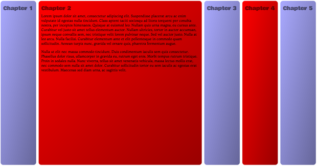
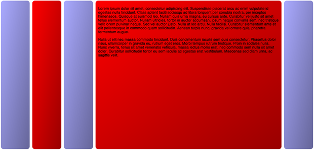

Animating flexboxes: the lowdown
Introduction
On a recent plane flight, I starting noodling around with combining flexbox properties, animations and transitions. I came to the conclusion that, for simple accordion-type UI features (see Figure 1), this can be quite useful. Sure, it is tricky to get it working the same across all browsers, but using modernizr you can feed legacy properties to older browsers that support the 2009 legacy flexbox syntax, and then provide something completely different to those geriatric browsers we are still called upon to support that have no flexbox support at all — like a simple tabbed interface perhaps.

Figure 1: A simple accordion interface created with flexbox, transitions and a touch of JavaScript. run the final example here.
Let's explore!
A simple barebones test
To do the initial test, I created a simple structure of <articles> contained within a <section>:
<section>
<article></article>
<article></article>
<article></article>
</section>The CSS I used was as follows:
section {
display: -webkit-flex;
display: -moz-flex;
display: -ms-flex;
display: flex;
}
article {
height: 300px;
-webkit-flex: 1;
-moz-flex: 1;
-ms-flex: 1;
flex: 1;
border: 1px solid black;
-webkit-transition: 1s all;
-moz-transition: 1s all;
-ms-transition: 1s all;
transition: 1s all;
}
article:hover {
-webkit-flex: 2;
-moz-flex: 2;
-ms-flex: 2;
flex: 2;
}I happily saw that it worked fine (In Opera and Chrome anyway, other browsers don't support modern flexbox) — on hover, the <article>s smoothly increase in size, with their siblings shrinking to accommodate (run the initial test example).
A better looking transition flexbox example
Following on from this I created a better looking example, and continued to play (see Figure 2).

Figure 2: A simple accordion interface created with flexbox and transitions run the transitions example.
The HTML structure is basically the same, except that I've added in more content, increased the number of <article>s from three to five, and removed the <section> — <body> is now the outer container. I have used the following CSS to give me the same effect as before (plus a load of styling that I've omitted for brevity):
body {
margin: 0 auto;
display: -webkit-flex;
display: -moz-flex;
display: -ms-flex;
display: flex;
}
article {
-webkit-flex: 1 0;
-moz-flex: 1 0;
-ms-flex: 1 0;
flex: 1 0;
-webkit-transition: 1s all;
-moz-transition: 1s all;
-ms-transition: 1s all;
transition: 1s all;
overflow: hidden;
height: 550px;
color: rgba(0,0,0,1);
}
article:hover {
-webkit-flex: 1 600px;
-moz-flex: 1 600px;
-ms-flex: 1 600px;
flex: 1 600px;
color: rgba(0,0,0,1);
}Note that I've hidden the headings for now, as they were creating a weird problem with the flex animation not working at lower viewport widths, refusing to expand beyond the width of the headings. Don't worry: I'll throw in a fix for this later on in the article!
An animation/flexbox example
The next thing I tried was creating a similar example, but using animations applied to the <article>s using JavaScript: it is surely better to allow the user to expand and contract content by clicking, rather than being at the mercy of hover states!
My code base for this example (try the flexbox animation example live) is very similar to the previous example, except that there are no transitions, and I have defined the following animations to control the width increases/decreases:
@keyframes flex-out {
0% {
color: rgba(0,0,0,0);
width: auto;
}
100% {
color: rgba(0,0,0,1);
width: 500px;
}
}
@keyframes flex-in {
0% {
color: rgba(0,0,0,1);
width: 500px;
}
100% {
color: rgba(0,0,0,0);
width: auto;
}
}Note: I've not included all the different vendor prefix versions of the keyframe blocks in this listing, to abate boredom.
YES. Bit of a golf clap moment here. I'm not animating flex, like I did with the transition example! WHY? Because it won't work. Flexbox can be transitioned, but not animated, so we had to make do with animating width instead. The animations are attached to classes, like this:
article.flex-out {
-webkit-animation: flex-out 1s both;
-moz-animation: flex-out 1s both;
-ms-animation: flex-out 1s both;
animation: flex-out 1s both;
}
article.flex-in {
-webkit-animation: flex-in 1s both;
-moz-animation: flex-in 1s both;
-ms-animation: flex-in 1s both;
animation: flex-in 1s both;
}I then use a fairly simple toggle function to attach the classes to the <article>s, alternating them on successive clicks to allow us to expand and collapse them as we want.
var articles = document.getElementsByTagName('article');
var toggleFlex = function(articleId) {
for(j=0;j<=(articles.length-1);j++) {
if(articles[j].id == articleId) {
if(articles[j].className == "" || articles[j].className == "flex-in") {
articles[j].className = "flex-out";
} else {
articles[j].className = "flex-in";
}
} else if(articles[j].className == "flex-out") {
articles[j].className = "flex-in";
}
}
}
for(i=0;i<=(articles.length-1);i++) {
articles[i].onclick = function() {
var articleId = this.id;
toggleFlex(articleId);
}
}But there was a problem … put simply, this sucks! It doesn't seem to work very well across browsers, and the animation can be jarring. I decided to go back to the drawing board, and revisit transitions!
The final attempt: transitions, JavaScript, and backwards compatibility
I thought a bit more about this, and decided to try the JavaScript toggling technique along with transitions. This actually turns out to be simpler and more effective. You just put the transitions inside your CSS like before, but don't include the hover states inside the CSS. Instead, you can attach alternative styles to the elements via JavaScript on click, which triggers the transition. In addition, I have:
- Made the boxes fill the whole of the screen width and height
- Added the headings back in, fixing the layout problem they were creating and keeping them accessible in the process
- Used Modernizr to make the examples work in older browsers that support the legacy Flexbox syntax
- Made it keyboard accessible
The first thing I did was to add Modernizr to my page, and some Google fonts:
<script src="modernizr-flex.js"></script>
<link href='http://fonts.googleapis.com/css?family=Viga|Bowlby+One|Montaga' rel='stylesheet' type='text/css'>Next, the full CSS for the <html>, <body> and <article>s ended up looking like this:
html {
font-size: 10px;
font-family: 'Montaga', serif;
width: 100%;
height: 100%;
margin: 0;
}
body {
width: 100%;
height: inherit;
margin: 0;
display: -ms-flexbox;
-ms-box-orient: horizontal;
display: -webkit-flex;
display: -moz-flex;
display: flex;
}
.no-flexbox body {
display: -webkit-box;
display: -moz-box;
display: -ms-flexbox;
}
article {
-webkit-flex: 1 0;
-moz-flex: 1 0;
-ms-flex: 1 0;
flex: 1 0;
margin: 0.5rem;
padding: 1rem;
border-radius: 1rem;
color: rgba(0,0,0,0);
background: -webkit-linear-gradient(top left,rgba(0,0,0,0),rgba(0,0,0,0.4));
background: -moz-linear-gradient(top left,rgba(0,0,0,0),rgba(0,0,0,0.4));
background: -ms-linear-gradient(top left,rgba(0,0,0,0),rgba(0,0,0,0.4));
background: linear-gradient(to bottom right,rgba(0,0,0,0),rgba(0,0,0,0.4));
-webkit-transition: 1s all;
-moz-transition: 1s all;
-ms-transition: 1s all;
-o-transition: 1s all;
transition: 1s all;
overflow: hidden;
position: relative;
padding-top: 5rem;
}
.no-flexbox article {
-webkit-box-flex: 1;
-moz-box-flex: 1;
width: 200px;
}The transitions are defined here, but this time I have no article:hover rule to dictate what happens on mouse over. In addition, I have used Modernizr's class names to apply legacy flex properties to <body> and <section> only for browsers that don't support modern flexbox but do support flexbox legacy, and I've added in IE-specific flex properties (e.g. display: -ms-flexbox; -ms-box-orient: horizontal;) to the main rules so that IE10 will now support the example. This will now work in Safari, Firefox and IE10 as well.
Note: Read the Intelligent fallbacks for flexbox section of my previous Flexbox article for more detailed information on the current state of Flexbox browser support, and the legacy syntax required for cross browser support.
Also note the width and height of 100% and margin: 0 on the <html> element, and height: inherit and margin: 0; on the <body>. This forces the contents to fill up the viewport, whatever width and height it is, which works well with the flexbox inside it.
Now let's look at the JavaScript:
var articles = document.getElementsByTagName('article');
var toggleFlex = function(articleId) {
for(j=0;j<=(articles.length-1);j++) {
if(articles[j].id == articleId) {
articles[j].focused = true;
if(articles[j].className == "") {
if(Modernizr.flexbox) {
articles[j].className = "flex-out";
articles[j].style.cssText = "-webkit-flex: 1 500px;-moz-flex: 1 500px;-ms-flex: 1 500px;flex: 1 500px;color: rgba(0,0,0,1);"
} else if(Modernizr.flexboxlegacy) {
articles[j].className = "flex-out";
articles[j].style.cssText = "width: 500px;color: rgba(0,0,0,1);"
}
}
} else if(articles[j].className == "flex-out") {
articles[j].className = "";
articles[j].style.cssText = ""
}
}
}
for(i=0;i<=(articles.length-1);i++) {
articles[i].onfocus = function() {
var articleId = this.id;
toggleFlex(articleId);
}
}This is very similar to before. I'm looping through all the <article>s, but this time I'm adding an onfocus handler to them, not onclick. This means that the article can be keyboard accessible, so long as the <article>s can receive focus. I have handled that by adding an attribute of tabindex="0" to all of them. The one problem is that now you can't close a chapter again by clicking on it when it is open. You can can only close a chapter by clicking on a different chapter. I've left this as a problem for another day.
In the toggleFlex() function, I am looping through all of the <article>s, and checking which one is being clicked by checking its ID value. The one that is clicked is opened up and the text inside made visible by giving it a different flex basis value (or a different width in the case of legacy flexbox browsers, as they don't have flex basis available, and I couldn't get this to work in any other way) and high text opacity, plus it is given a className to set up a toggle:
if(Modernizr.flexbox) {
articles[j].className = "flex-out";
articles[j].style.cssText = "-webkit-flex: 1 500px;-moz-flex: 1 500px;-ms-flex: 1 500px;flex: 1 500px;color: rgba(0,0,0,1);"
} else if(Modernizr.flexboxlegacy) {
articles[j].className = "flex-out";
articles[j].style.cssText = "width: 500px;color: rgba(0,0,0,1);"
}The other <article>s are not affected, unless they have already been opened up (checking whether they have the flex-out class), in which case they are contracted again by removing the CSS added to them and removing the class:
else if(articles[j].className == "flex-out") {
articles[j].className = "";
articles[j].style.cssText = ""
}The last thing to mention is the headings. I have made the actual <h2>s very small and hidden them, so they won't mess up the layout but will still remain accessible to screen reader users:
h2 {
line-height: 0;
font-size: 0;
visibility: hidden;
}I have then added the visual headings back in using a CSS counter and absolutely positioned generated content, which won't trigger the layout problem encountered earlier:
body {
counter-reset: chapter 0;
}
article {
counter-increment: chapter;
}
article:before {
font-family: 'Bowlby One', cursive;
position: absolute;
top: 13px;
left: 10px;
content: "Chapter " counter(chapter);
font-size: 2rem;
font-size: 1.5vw;
color: rgba(0,0,0,0.5);
}Summary
This article has been fun to write, and I hope I have created an interesting technique that has at least given you food for thought! It is worth noting that you can achieve a similar effect using floated elements and focus states, like in this float demo. However, this is most inflexible — it relies on knowing the exact number of chapters you are going to have, and setting the percentages to suit. With the Flexbox method, it should work regardless of the number of child containers, and without needing to worry about exact measurements.
Chris Mills

Chris Mills is a web technologist, open standards evangelist and education agitator, currently working at Opera Software in the developer relations team. He spends most of his time writing articles about web standards for dev.opera.com and other publications (such as .net mag and A List Apart), giving talks at universities and industry conferences, and lobbying universities to improve their web education courses. He believes that education is the answer to everything, but in particular he is passionate about using education to improve the overall content quality, accessibility, usability and future-viability of the Web.
He is the creator of the Opera Web standards curriculum, contributor to the WaSP InterACT project, and coauthor of InterACT with web standards: A Holistic Approach to Web Design. In August 2011, he also accepted the position of co-chair of the newly-formed Web Education Community Group.
Outside work he is a heavy metal drummer, proud father of three and lover of good beer.
This article is licensed under a Creative Commons Attribution 3.0 Unported license.
Comments
No new comments accepted.